Header 01
기본 헤더
로고, GNB, 로그인, 사이트맵, 모바일 메뉴를 포함한 가장 기본적인 헤더 구조입니다. 일반적인 기관/회사 사이트의 시작 템플릿으로 사용합니다.
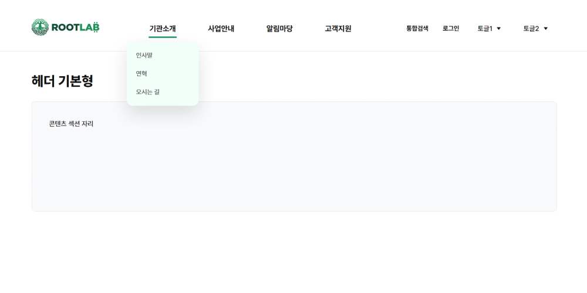
Figma MCP 작업 전 참고할 수 있는 헤더, 모바일 메뉴, 서브 페이지 기본 패턴 모음입니다. 각 예시 HTML의 복사 시작/끝 주석 안쪽은 실제 프로젝트 클래스 기준으로 작성되어 바로 붙여넣을 수 있습니다. index.css와 index.js는 패턴 목록 화면 전용입니다.
로고, GNB, 로그인, 사이트맵, 모바일 메뉴를 포함한 가장 기본적인 헤더 구조입니다. 일반적인 기관/회사 사이트의 시작 템플릿으로 사용합니다.

우측 유틸 영역과 전체메뉴 레이어를 포함한 헤더 패턴입니다. 메뉴 구조가 많거나 사이트맵 접근성이 중요한 사이트에 적합합니다.
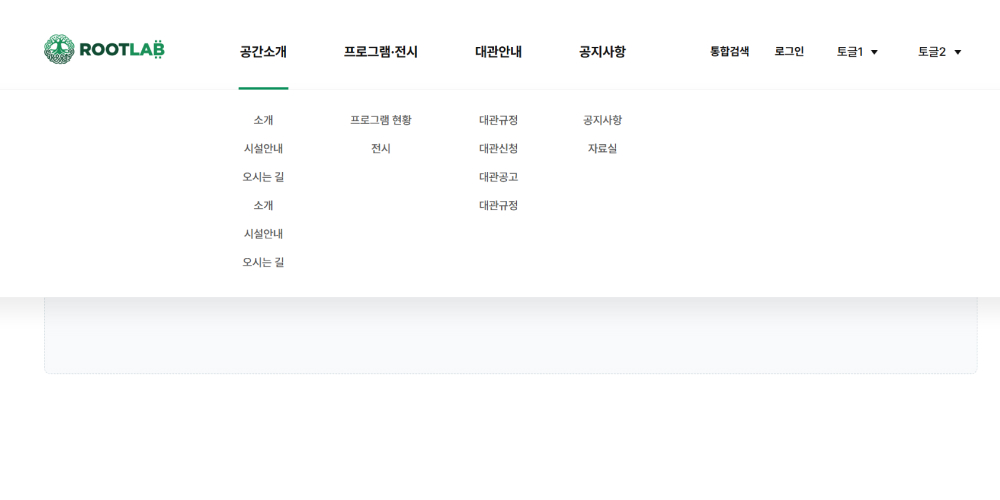
PC에서 1뎁스 메뉴별로 좌측 설명 영역과 우측 2뎁스 목록이 함께 펼쳐지는 메가메뉴입니다. 섹션별 안내 문구를 함께 보여줘야 하는 정보형 사이트에 적합합니다.
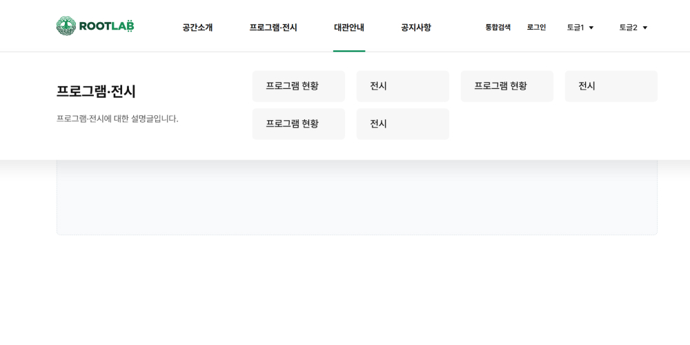
좌측 강조 영역, 우측 2뎁스/3뎁스 목록, 배경 dim 처리를 포함한 확장형 메가메뉴입니다. 하위 메뉴가 깊고 사용자가 메뉴 구조를 한눈에 파악해야 하는 공공기관·대형 사이트에 적합합니다.
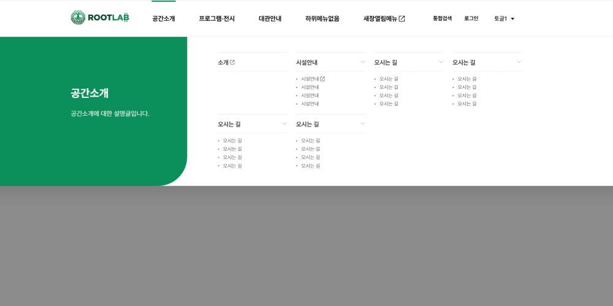
모바일 메뉴 버튼 클릭 시 우측 슬라이드 패널이 열리고, 1뎁스/2뎁스 메뉴를 아코디언으로 탐색하는 기본형 모바일 내비게이션 패턴입니다.
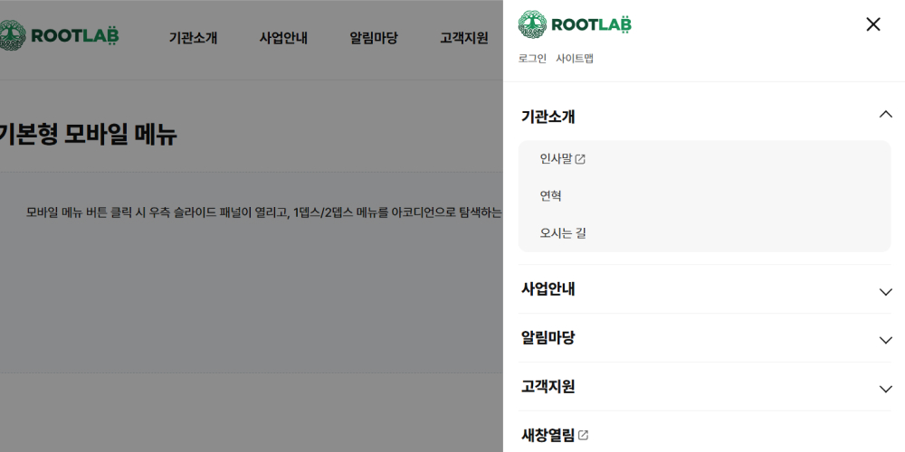
PC에서는 전체메뉴 버튼 클릭 시 페이지형 메뉴가 열리고, 모바일에서는 동일한 전체메뉴 구조를 슬라이드 메뉴로 전환해 사용하는 통합형 헤더 패턴입니다.
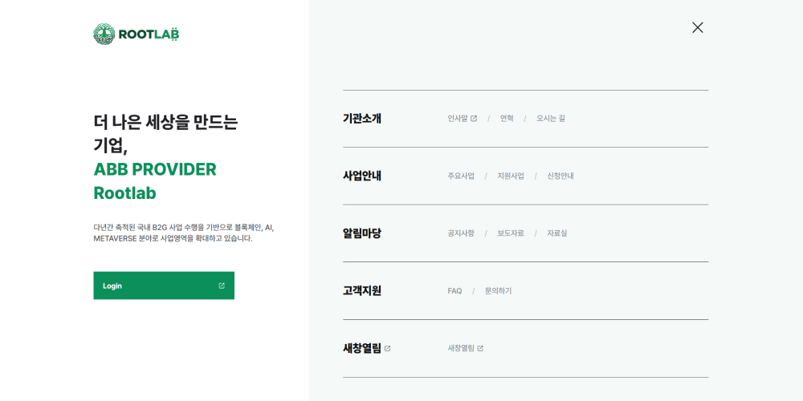
서브 비주얼 바로 아래에 1뎁스와 2뎁스 드롭다운 메뉴를 배치하는 패턴입니다.
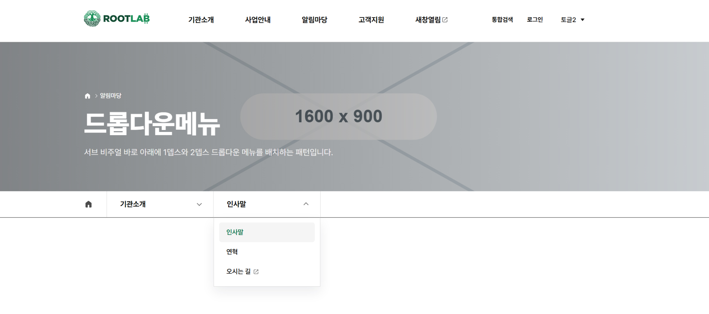
서브 비주얼 아래 좌측 사이드 메뉴와 본문 영역을 나누는 패턴입니다. 2depth 이상의 서브 메뉴가 필요한 정보형 페이지에 적합합니다.
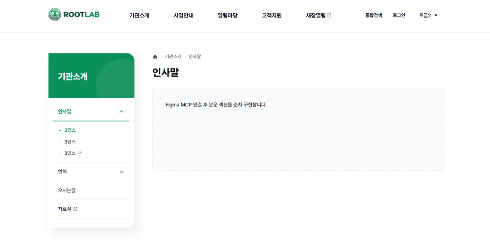
서브 비주얼 바로 아래 가로 탭 메뉴를 배치하는 패턴입니다. 같은 성격의 콘텐츠를 분류해서 보여주는 게시판/안내 페이지에 사용합니다.
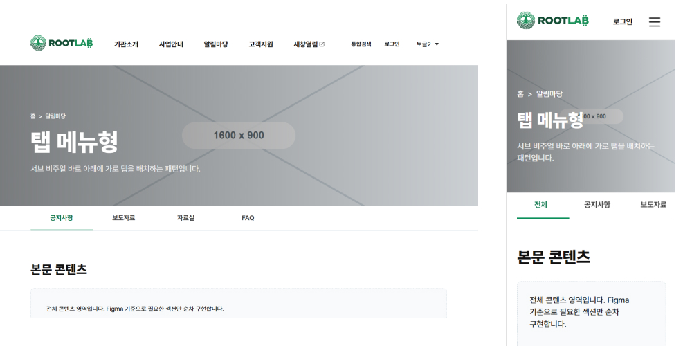
서브 비주얼 바로 아래 가로 탭 메뉴를 배치하는 패턴입니다. 같은 성격의 콘텐츠를 분류해서 보여주는 게시판/안내 페이지에 사용합니다.
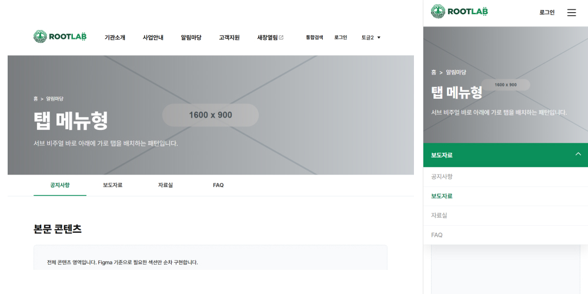
검색, 목록, 첨부 표시, 페이징을 포함한 기본 게시판 목록 패턴입니다. 실제 페이지에는 board.css를 연결하고 필요한 행만 CMS 구조에 맞춰 교체합니다.
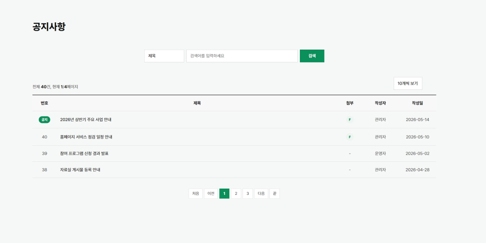
상세 제목, 작성 정보, 본문, 첨부파일, 이전글/다음글, 버튼 영역으로 구성한 게시판 상세 패턴입니다.
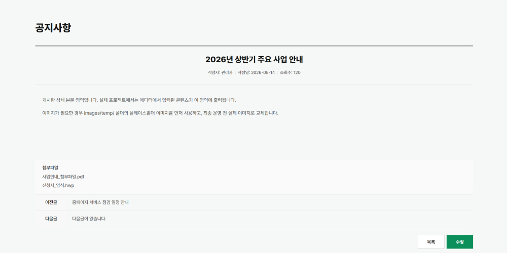
썸네일 카드, 게시물 정보, 검색, 페이징을 포함한 갤러리 게시판 목록 패턴입니다. 썸네일은 images/temp/ 플레이스홀더를 사용합니다.
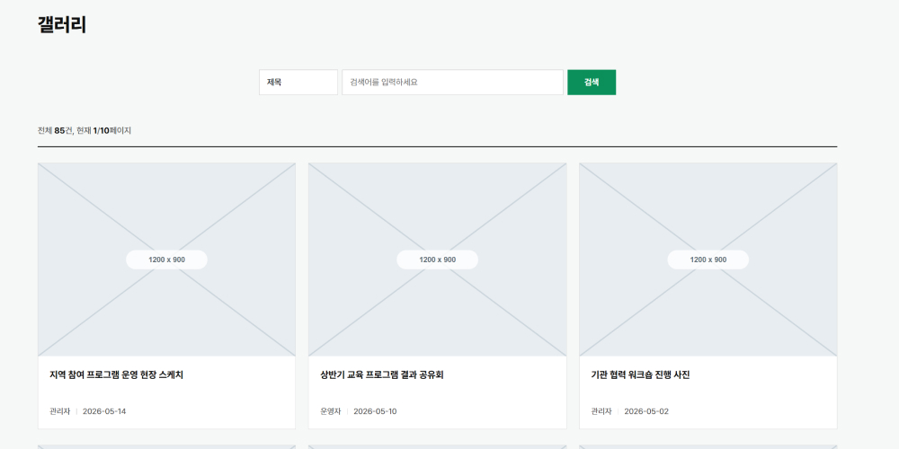
대표 이미지, 상세 본문, 첨부파일, 이전글/다음글을 포함한 갤러리 게시판 상세 패턴입니다.
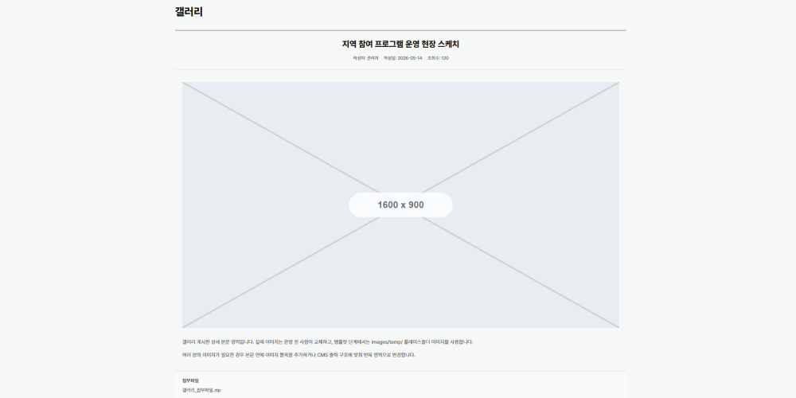
components.css 기준의 버튼, 탭, 테이블, 리스트, 아코디언, 툴팁, 파일 업로드 마크업 예시입니다. 필요한 블록만 복사해 사용합니다.
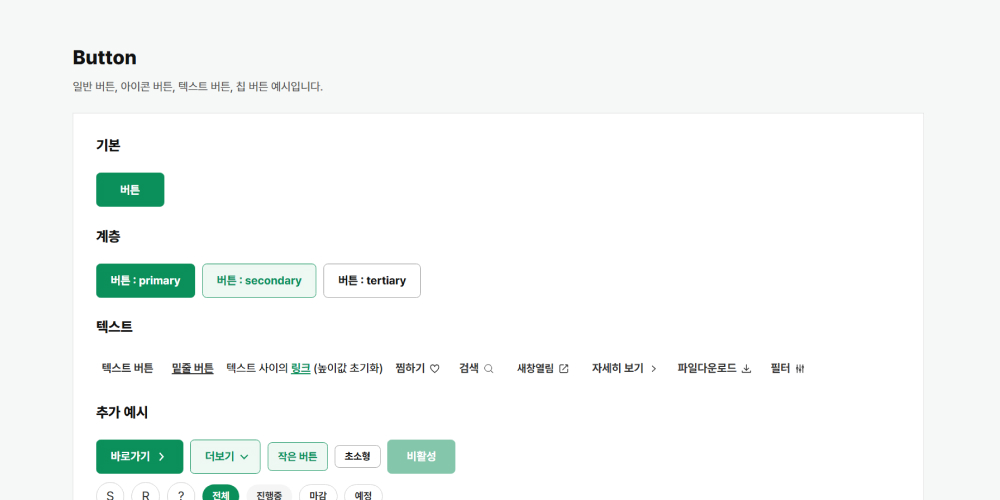